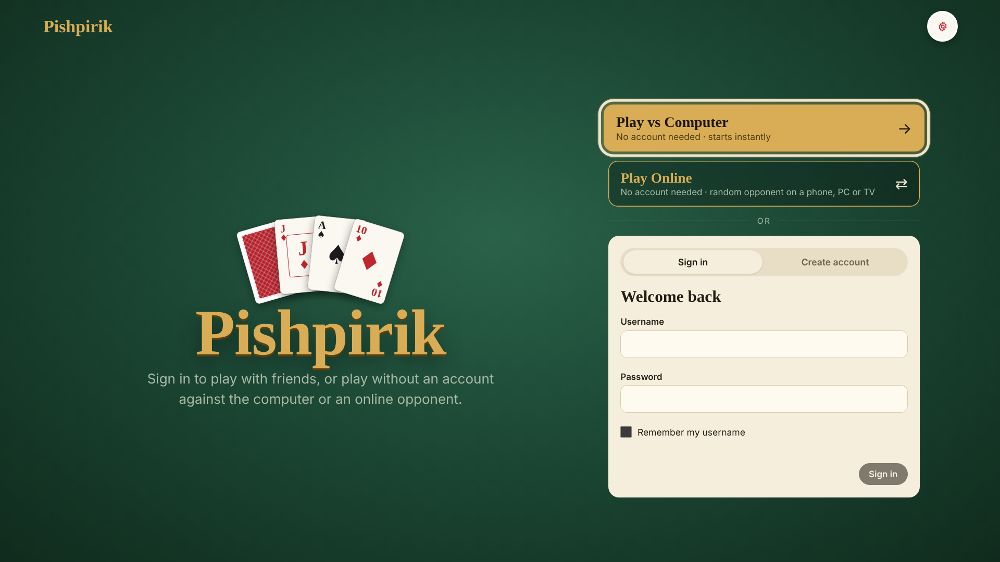
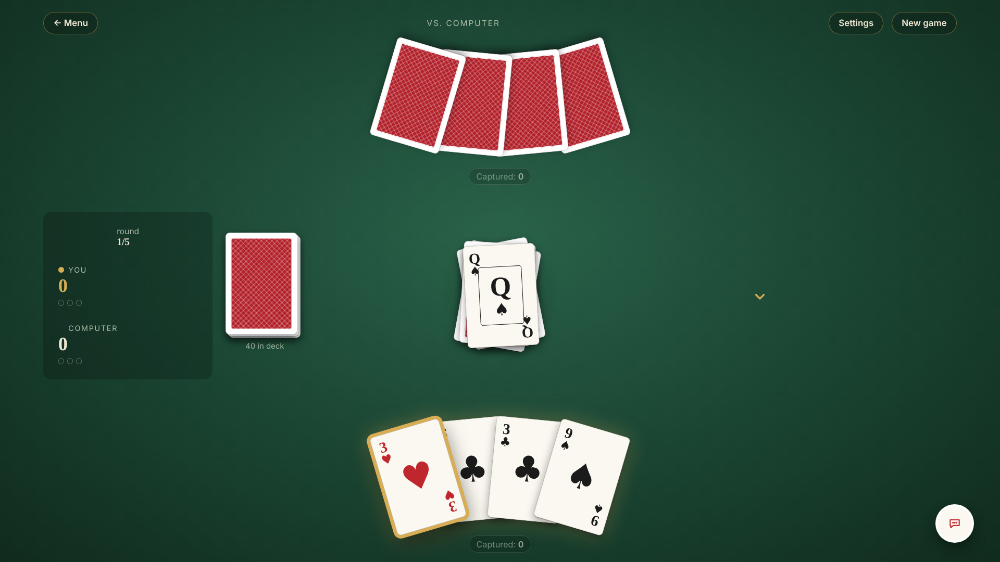
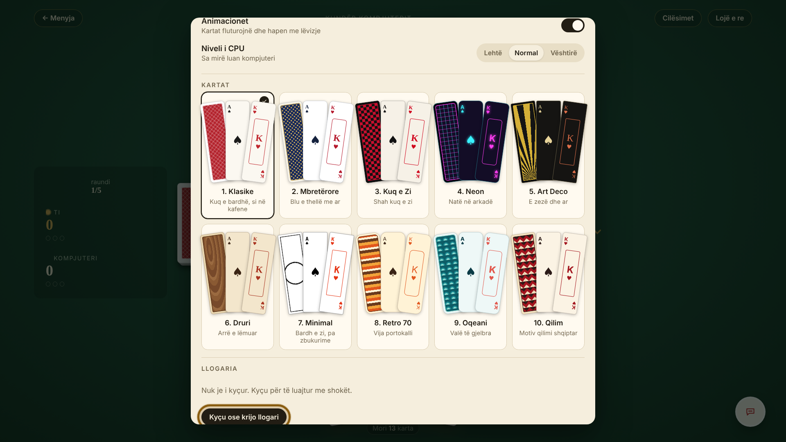
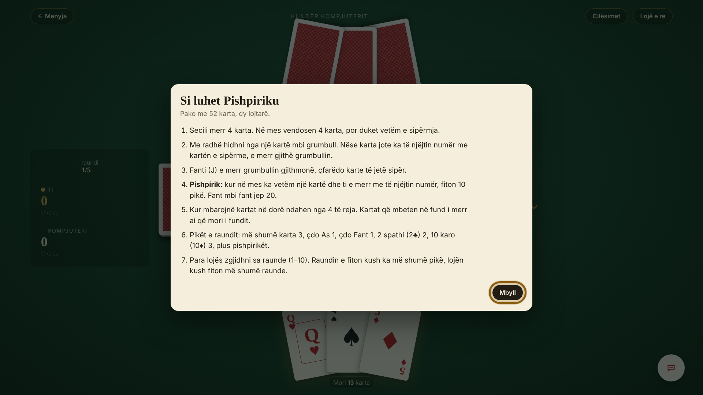
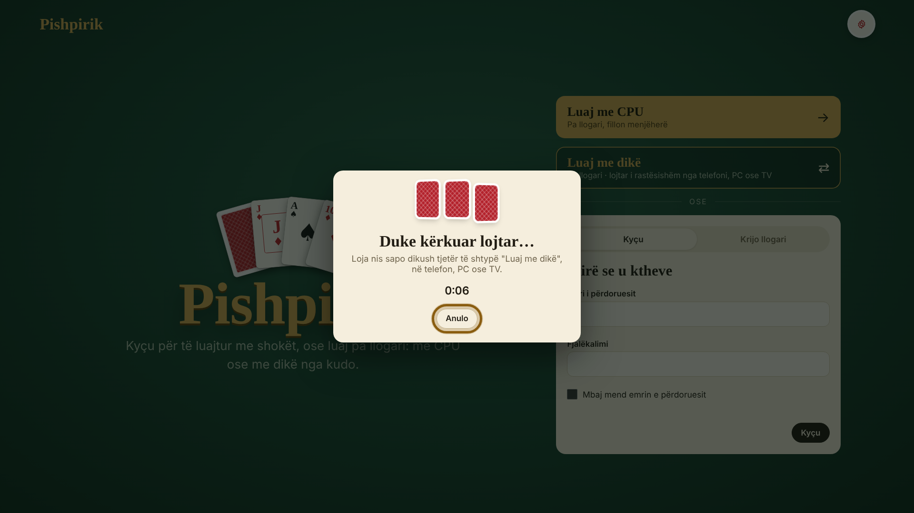

App ID: al.pishpirik.game · Version 1.0.4 · Type: Web app · Resolutions: 1920×1080 and 1280×720 · Platforms: webOS 4.0 (2018) and later · Languages: English and Albanian
Pishpirik is a traditional Albanian two-player card game. The user plays against the computer, plays online against a random person without an account (“Play Online”, cross-play with phones, computers and other TVs), or signs in and plays online with friends added by username. The whole app is operated with the remote control.
| Remote key | Action |
|---|---|
| Arrow keys | Move the gold focus frame between buttons, fields and the cards in your hand |
| OK | Activate the focused button / play the focused card |
| BACK | Close the open dialog (in the player search: cancel the search); in a game, return to the menu; on the start screen, exit the app (webOS platformBack) |
| Magic Remote pointer | Focus follows the pointer; click = OK |
No in-app purchases. No advertising. No adult content (rated 12+ because of the optional text chat in online games).

Shown at launch. Focus starts on “Play vs Computer”.

Left: score and round. Top: opponent's cards (face down). Middle: deck and pile. Bottom: your hand.
When the round ends, a summary dialog shows the points; OK starts the next round.


Opened from Settings → “Game rules”. Explains the rules (English or Albanian). “Close” or BACK closes it.

Accounts are only needed for playing with friends. Sign-up is free and instant inside the app: it needs only a username and a password, no e-mail or personal data, so the tester can create the test accounts directly.